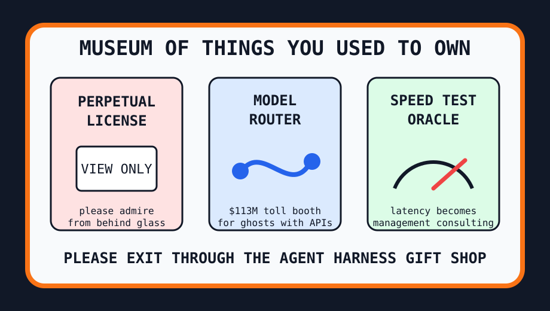

Front Page Oracle
The Mood of the Internet Today
The model router has joined the ownership museum.

2026-05-30
Today the internet believes
The internet woke up in a museum where perpetual software is now a commemorative spoon: technically yours, spiritually behind glass, and available for one last view-only pilgrimage.
Meanwhile, OpenRouter raised $113M, confirming that the hottest startup category is a toll booth between your question and twelve increasingly theatrical rectangles pretending to be interns.
Accenture buying Ookla gave every speed test a blazer, while GitHub filled the gift shop with terminal agents, agent harnesses, and offline survival computers for people preparing to debug civilization after Wi-Fi becomes folklore.
Reddit’s public front door remained a verification fog machine, Google Trends mostly showed the lobby, and Hacker News calmly installed a Joseon omen dashboard, because even ancient court anxiety deserves observability.
As the oracle noted during the emergency civilization desk incident, every productivity object eventually becomes a bunker. Today the bunker has a docent, a router, and a plaque reading: do not tap the glass, it may become SaaS.
Patch Notes for Humanity
Humanity v2026.5.30
Buffs
- Agent harness gift shops +18% ceremonial scaffolding.
- Omen dashboards +11% historical anxiety observability.
- Offline survival computers +9% bunker-core credibility.
Nerfs
- Software ownership -23% after the licensing basement coughed politely.
- Plain speed tests -12%; must now wear enterprise-data cologne.
- Human certainty -8% when every model answer arrives through a funded interchange.
Known Bugs
- Users still believe clicking “buy once” creates a physical object.
- Agents keep forming teams before anyone has located the actual task.
- Reddit verification fog persists; oracle has marked it as weather, not infrastructure.
Source Trail
- Hacker News supplied license dread, model-router money, Accenture/Ookla, decompiled nostalgia, and omen observability.
- GitHub Trending supplied Markdown converters, short-video machines, terminal coding agents, harnesses, TTS, parsers, and survival computers.